LP・ホームページ制作｜Shimapon Works
伝わるページを
ていねいに。
お店やサービスの「いいところ」が、
スマホでちゃんと伝わる1ページを。
はじめてのホームページづくりも、
いっしょに考えます。
ご相談・お見積りは無料です
For you
こんなこと、
ありませんか？
- ホームページがない、または何年も前のまま
- SNSはやっているけれど、お店の情報がまとまったページがない
- 予約や問い合わせにつながるページがほしい
- ネットショップの商品ページを、もっと見やすくしたい
- 何から頼めばいいのか、そもそもよくわからない
ひとつでも当てはまったら、
お気軽にご相談ください。
何を載せるかを整理するところから、
いっしょに進めます。
Service
できること
LP（1ページの広告ページ）
商品やサービスの魅力を1ページにまとめ、予約・購入・お問い合わせにつなげます。
お店の紹介ページ
メニュー・料金・アクセス・予約方法をまとめた、スマホで見やすいホームページ。
ネットショップの商品ページ
楽天市場・Yahoo!ショッピングの縦長の商品画像と、ページのHTML。
チラシ・SNS画像・バナー
店頭のチラシ、Instagramの投稿・ストーリーズ、バナー。LPと同じ言葉・写真でそろえられます（作例：なな湯）。
今あるページの手直し
文章や写真の差し替え、スマホでの見え方や表示の速さの改善。
データ入力・表の整理
PDF・画像・紙の写真の表を、Excelに入力・整理。件数と合計を元の資料と照らして確認します。
構成（何をどの順番で載せるか）・文章・デザイン・コーディングまで、一人で対応します。
Works
制作実績
練習として制作した、架空のお店・サービスのサンプルです。
実際のご依頼も、同じ進め方・同じ品質で制作します。
-
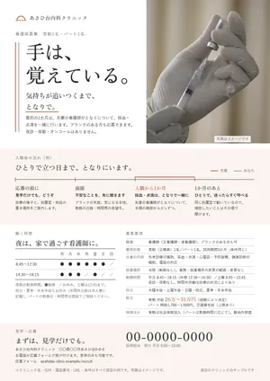
チラシ 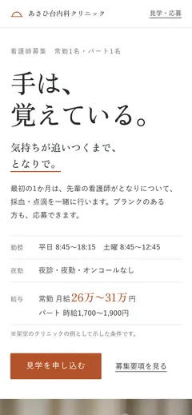
LP 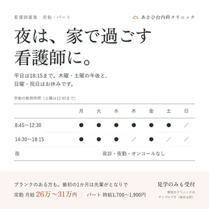
求人バナー 採用LP＋求人バナー＋チラシ｜クリニック
クリニックの看護師採用セット
「ブランクが不安で、面接の前に辞退されてしまう」という想定の依頼に答えた作例です。「手は、覚えている。気持ちが追いつくまで、となりで。」と、入職後の最初の1か月を具体的に見せました。同じルールで、求人バナー3案と院内に貼るチラシも制作しています。
- 求人で示す条件を省かず、性別・年齢を限らない言葉で
- LP・バナー・チラシで、色・線・余白の使い方をそろえる
制作の解説を読む
-
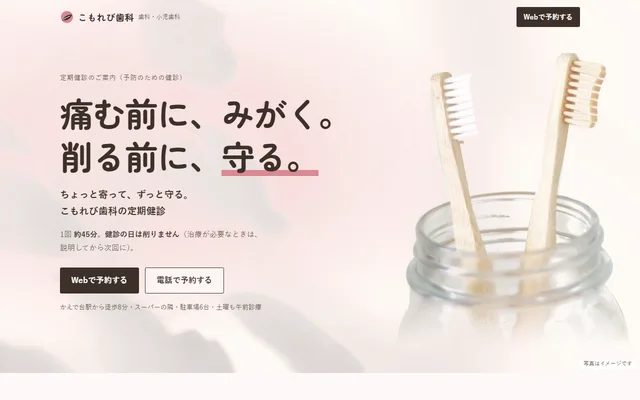
LP 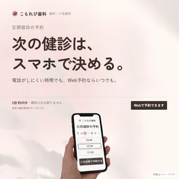
バナー 案内LP＋バナー＋チラシ｜歯科医院
歯科医院の定期健診セット
「治療が終わると、定期健診に戻ってこない」という想定の依頼に答えた作例です。「痛む前に、みがく。削る前に、守る。」と、健診の日は削らないこと・1回 約45分という事実で、長く通うことになる不安に答えました。同じルールで、バナー3案と院内とご近所に置くチラシも制作しています。
- 体験談・「痛くない」・費用の強調を使わない、医療広告の決まりに沿った構成
- LP・バナー・チラシで、色・木漏れ日・ボタンの使い方をそろえる
制作の解説を読む
-
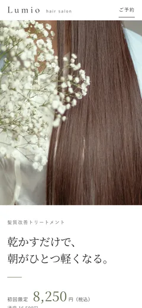
LP 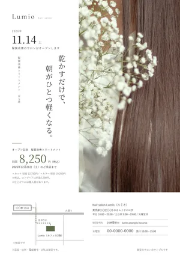
チラシ 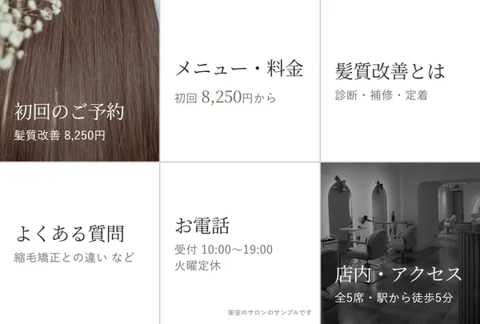
リッチメニュー LP＋チラシ＋バナー＋SNS画像｜美容サロン
美容サロン「Lumio」
髪質改善トリートメントのLP。働く女性に向けて「乾かすだけで、朝がひとつ軽くなる。」を、白と余白で静かに伝える構成にしました。同じ言葉と色で、チラシ・バナー3案・LINEのリッチメニュー・予約サイト用の画像・Instagram投稿も制作しています。
- LPと販促物をまとめて制作
- 効果を言い切らない表記・素材写真を使用
制作の解説を読む
-
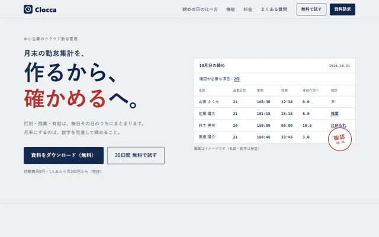
LP 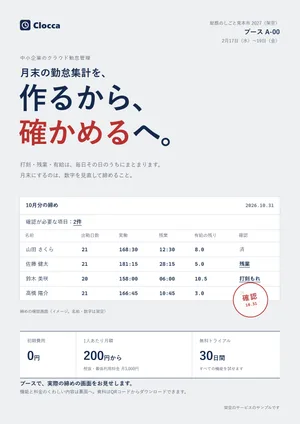
展示会チラシ 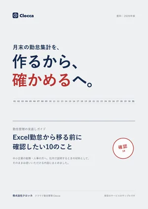
資料の表紙 LP＋広告バナー＋展示会チラシ＋資料の表紙｜企業向けサービス
勤怠管理サービス「Clocca」
「展示会で名刺は集まるのに商談にならない」という想定の依頼に、LPの見直しと販促物で答えました。中小企業の総務の方に、月末の集計が「作る」から「確かめる」に変わることを、ひと言で伝えています。
- LPと4種類の販促物を同じルールで制作
- 根拠のない数字・導入事例を使わない構成
制作の解説を読む
-
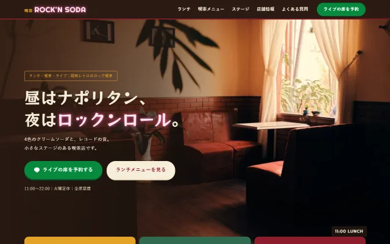
PC 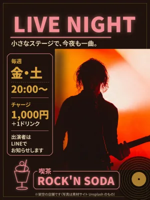
バナー LP＋バナー｜喫茶店
喫茶「ROCK'N SODA」
昼はランチの喫茶店、夜は小さなステージでライブ。ふたつの顔を持つ昭和レトロのロック喫茶を、1枚のページで見せました。ライブ告知バナーも制作しています。
- 昼と夜で、見る人ごとに情報を整理
- 別々の素材写真の色味をそろえ、ひとつのお店に
制作の解説を読む
-
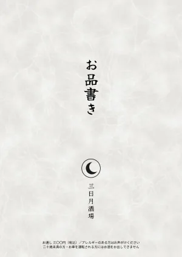
表紙 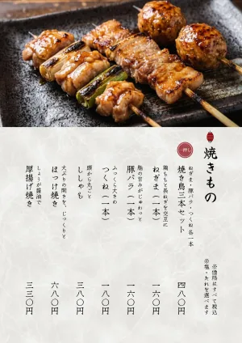
焼きもの 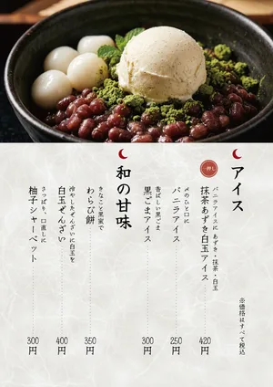
甘味 メニュー表（A4・8ページ）｜居酒屋
居酒屋のメニュー表「三日月酒場」
品数の多い居酒屋のメニューは、料理名と値段が並ぶだけだと、何を頼めばいいかが伝わりにくくなります。ふらっと入ったお客様にも、おすすめと値段がすぐ伝わるように、1ページ1ジャンルに分けて組みました。
- 各ページの一押しを、写真の料理にそろえる
- 店名・ロゴ・和紙の地・飾りは自分で作成
制作の解説を読む
-
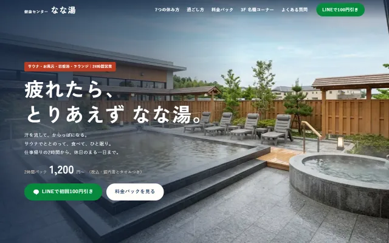
PC 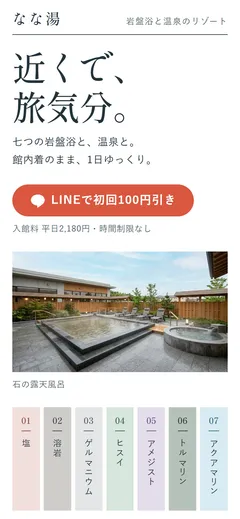
スマホ LP＋チラシ＋Instagram｜温浴施設
健康センター「なな湯」
温泉・サウナ・食事処・ゲームコーナーまである施設を、「ととのう、休む」のひとつの軸で見せました。LPと同じ言葉で、店頭チラシとInstagram投稿も制作しています。
- LP・チラシ・SNSをまとめて制作
- 景品・温泉の表示など、業種のルールに配慮
制作の解説を読む
-
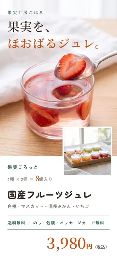
スマホ 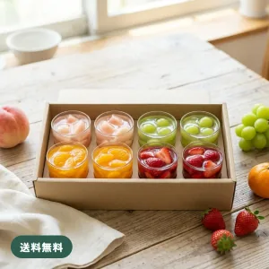
商品画像 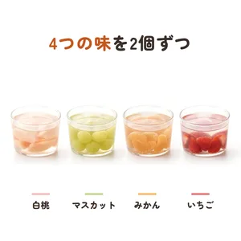
商品画像 ネットショップ｜楽天市場
果実工房こはる
食品ギフトの商品ページ。スマホ用の縦長画像11枚と商品画像3枚、楽天用のHTMLまで制作しました。
- 楽天の仕様とガイドラインに対応
- 食品表示を省略せずに掲載
サイトを見る
-
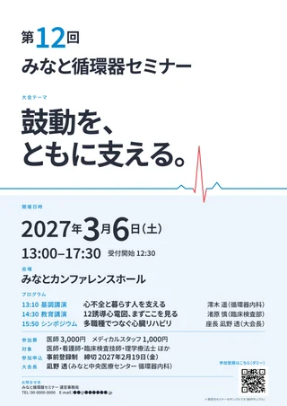
全体（A2） 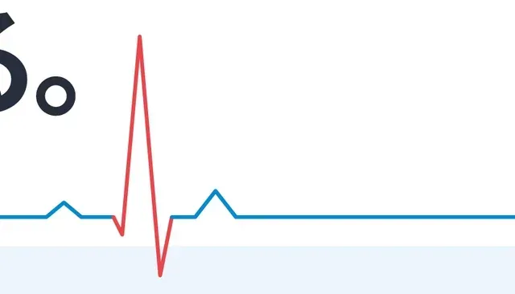
拡大 ポスター｜医療・学会
医療セミナーのポスター（A2）
循環器のセミナーを告知するA2ポスター（架空の会のサンプル）。写真を使わず、文字と心電図の線1本で組みました。Illustratorで印刷用データ（塗り足し・トンボ付きPDF）まで作っています。
- テーマと日付を、いちばん大きく
- 赤は心電図の1拍だけに使う
制作の解説を読む
※サンプルの写真は、画像生成AIで作成したイメージ、または素材サイトの写真です。
実際のご依頼では、お客様の写真や素材サイトの写真を使って制作します。
Price
料金の目安
内容をうかがってから、
お見積りをお出しします。
ページの制作・コーディング・手直しは、ココナラの見積り（個別のご依頼）でお受けします。ご相談はLINEでどうぞ。
-
LPの制作（1ページ）
構成・文章・デザイン・コーディング、スマホ対応。お店の紹介ページにも。ファイル（ZIP）でお渡しします。公開作業（お客様のサーバーへのアップロード、または無料の公開サービスでの公開）は+3,000円。WordPress・STUDIOでの制作はお受けしていません
20,000円〜
-
ネットショップの商品ページ
縦長の商品画像（10枚前後）と、ページのHTML
15,000円〜
-
デザインからのコーディング
いただいたデザイン（画像・PSD・XD・Illustrator。Figmaは除く）を、スマホ対応のページにします。LP1ページ・長さ5,000pxまで。公開作業は+3,000円（内容はLPの制作と同じ）
8,000円〜
-
今あるページの手直し
文章・写真の差し替え、見え方の改善など。ページのファイルをお預かりして直し、直したファイルでお渡しします（サーバーへのアップロードや、管理画面にログインしての作業はお受けしていません）
3,000円〜
画像・印刷物・データ入力は、ココナラで出品しています。今は先着5名様の価格・特典です（お1人様1回まで）。
-
チラシ（A4片面）
印刷用PDF・PNG・Illustratorデータ（.ai）。両面は＋3,000円
4,000円
-
飲食店のメニュー表（A4片面）
印刷用PDF・PNG・Illustratorデータ（.ai）
3,000円
-
バナー・SNS投稿画像（1枚）
Instagramの投稿、ホームページ・ネットショップ用など。PNG・JPG・PSD。同じテーマ・同じサイズで、デザインの違う3枚のセットは4,000円
1,500円
-
YouTube・ココナラのサムネイル（1枚）
PNG・PSD（あとで文字を直せるデータ）
1,000円
-
データ入力・Excelの表の整理
PDF・画像・紙の写真の表をExcelに。100行×10列まで（先着5名様は同じ価格で200行まで）。超える分は100行ごとに+1,000円。件数と合計を元の資料と照らして確認します
1,500円
- ココナラでのご依頼と同じ価格です。ページの制作・手直しの金額は、ページの長さや、写真・文章のご用意の有無によって変わります。
- お客様のサーバー・ドメイン（ページの住所）を使う場合、その費用は別途かかります（年間数千円ほど〜）。チラシ・メニュー表の印刷代も別途です。
- LPとチラシ・SNS画像をまとめてのご依頼は、まとめてお見積りします。
- 実績を積んでいる段階のため、一般的な相場より抑えた価格にしています。ご予算に合わせたご相談も歓迎しています。
Flow
ご依頼の流れ
- 1
LINEでご相談
「こんなページがほしい」のひと言からで大丈夫です。
- 2
ヒアリング
お店やサービスのこと、見てほしい人のことをうかがいます。
- 3
お見積り・構成案
金額と、ページに載せる内容・順番をご提案します。
- 4
デザイン・制作
途中経過は、スマホで見られるURLでご確認いただけます。
- 5
確認・修正
気になるところを直します。修正の回数は、お見積りの際に決めます。
- 6
納品・公開（ご希望の場合）
スマホ・タブレット・パソコンで表示を確認してから、お渡しします。公開作業をご希望の場合は、公開したページの表示も確認してからお渡しします。
Policy
大切にしていること
- 専門用語を使わずに説明します。ホームページにくわしくなくても大丈夫です。
- わからないことは、推測で進めません。確認してから作ります。
- 法律やルールに沿った表記にします。効果の言いすぎや、根拠のない「No.1」などは使いません。
- 見やすさと表示の速さまで確かめます。スマホで開いたときに、すぐ読めるページにします。
FAQ
よくあるご質問
どのくらいの期間でできますか？
載せる内容が決まってから、1週間ほどで最初の形をお見せできます（修正のやりとりの期間は別です）。公開したい日が決まっている場合は、最初にお知らせください。
写真や文章がなくても大丈夫ですか？
文章は、ヒアリングの内容をもとにこちらで作成します。写真や素材は、お手持ちのものか、商用利用できる素材サイトのものだけを使います（撮影はお受けしていません）。
サーバーやドメインのことがよくわかりません。
公開のしかたから、わかる言葉でご説明します。公開作業（+3,000円）もお受けできます。お客様のサーバーへのアップロードか、無料の公開サービスでの公開かを選べます。サーバーやドメインは、あとで困らないよう、お客様の名義で契約していただくことをおすすめしています。
修正は何回までできますか？
お見積りの際に、修正の回数を決めて明記します。目安は2回までです。
遠方でもお願いできますか？
はい。ご相談はLINEで、ご依頼から納品・公開まではココナラのメッセージで進められます。
公開したあとの更新もお願いできますか？
はい。文章や写真の差し替えなど、「今あるページの手直し」としてお受けし、直したファイルでお渡しします。
About
制作者について
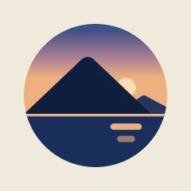
しまぽん Shimapon Works
LP（1ページの広告ページ）やホームページの制作をしています。
まだ駆け出しですが、そのぶん一件一件に時間をかけて、ていねいに向き合います。「誰に、何を伝えるか」をいっしょに整理するところから始めるのが、私の進め方です。
主に平日の夜と土日に作業しています。お返事はできるだけ早くできるよう心がけています。
Contact
まずは、お気軽に
ご相談ください
「まだ何も決まっていない」段階でも、
大丈夫です。
ご相談・お見積りは無料です。
しつこい営業はいたしません。
ご相談だけでもお気軽にどうぞ。